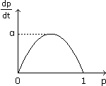
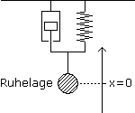
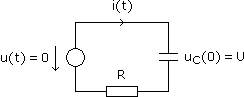

Differenzialgleichungen - Aufgaben 2
1.
Bei einer Umgebungstemperatur u = 25 °C kühlt ein 120 °C heißes Metallstück in 2,5 min auf 102 °C ab. Bestimme a) die Metalltemperatur (t) nach t sec, wenn d/dt ∼ – u (Newton'sches Abkühlungsgesetz), und b) die Zeit, nach der die Temperatur 80 °C erreicht.
2.

a) Bestimme den Prozentsatz p(t) der Bevölkerung, der nach t Tagen mit einem Virus infiziert ist, wenn p(0) = 2% ist und dp/dt so wie nebenstehend angegeben quadratisch von p abhängt mit α = 5%/Tag. b) Nach wieviel Tagen sind 99% der Bevölkerung infiziert?
3.

Die Beschleunigung a einer Masse m = 0,1 kg an einer (masselosen) gedämpften Feder ergibt sich aus F = ma und die Kraft F aus der Überlagerung von Reibungskraft Fr = –rv und Federkraft Fk = –kx. Bestimme die Auslenkung x(t) nach t sec für den Fall, dass
a) r = 0,9 Ns/m; k = 2 N/m; x(0) = 0,15 m; v(0) = 0 m/s
b) r = 1,2 Ns/m; k = 3,6 N/m; x(0) = –0,1 m; v(0) = 4 m/s
c) r = 0,4 Ns/m; k = 8,5 N/m; x(0) = 0,1 m; v(0) = –2 m/s
4.
In Aufgabe 3c wirke eine äußere Kraft Fs = (1,4cos15t+0,6sin15t) N auf die Masse m ein. Bestimme x(t) im eingeschwungenen Zustand.
Über die unten angegebene Schaltung wird ein Kondensator in aufgeladenen Zustand versetzt. Zum Zeitpunkt t = 0 wird die Spannungsquelle durch einen Leiter ersetzt, wodurch die im Kondensator gespeicherte Energie W über den Entladestrom i(t) am Widerstand R in Wärme umgewandelt wird. Bestimme a) i(t) und damit b) W.

Ergebnisse:
1. (t) = 25
+95e
–0,0014t 2. a) p(t) =
b) 42,4
3. a) x(t) = 0,75e
–4t – 0,6e
–5t
b) x(t) =
–0,1e–6t + 3,4te–6t
c) x(t) =
0,1e–2tcos9t – 0,2e–2tsin9t
4. x(t) = –0,1cos15t
5. a) i(t) = –
e
–tRC b) W =
CU
2